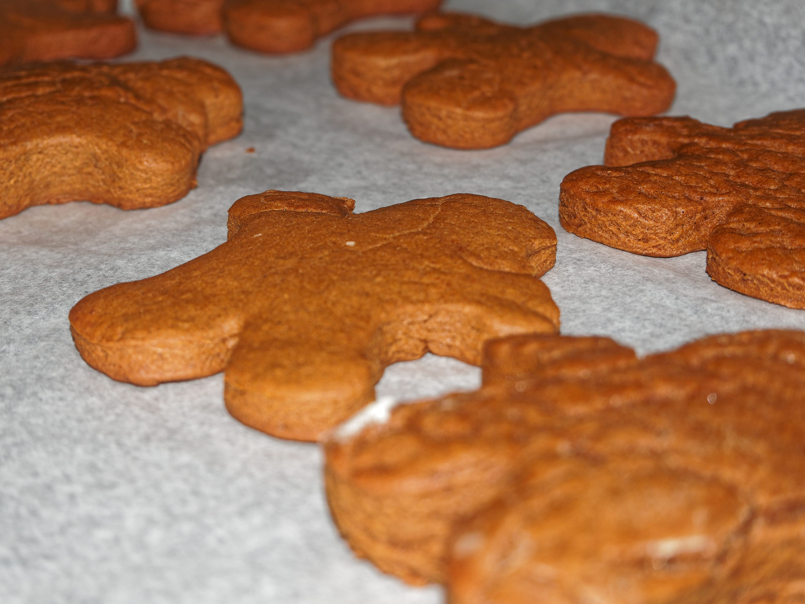

Gingerbread Cookies Recipe
12-24-2018
This classic holiday recipe comes from Tasty.
Ingredients
- 3 cups flour
- 2 tsp cinnamon
- 1/4 tsp nutmeg
- 1/4 tsp allspice
- 2 tsp ginger
- 1/2 tsp baking powder
- 1 tsp baking soda
- 1 tsp salt
- 1/2 cup butter
- 3/4 cup molasses
- 1/2 cup brown sugar
- 1 tsp vanilla
- 1 tsp lemon zest
- 1 beaten egg
Directions
- Mix dry ingredients in a bowl (except brown sugar and lemon zest)
- Melt butter on stove
- Add molasses and brown sugar to butter and mix well
- Turn off heat once sugar is melted
- Stir in vanilla, lemon zest, and egg
- Slowly add in dry ingredients, mix until forms soft dough
- Transfer to plastic wrap and chill for at least 2 hours
- Preheat oven to 350 deg
- Roll out dough to about 1/4 inch thickness
- Cut into desired shapes and transfter to baking sheet
- Bake for 12-15 minutes
- Decorate